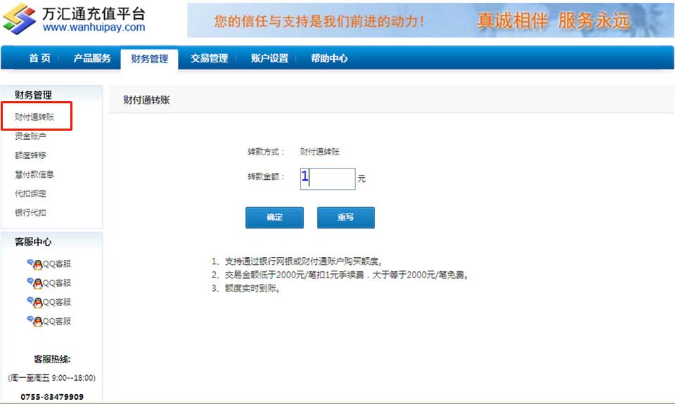
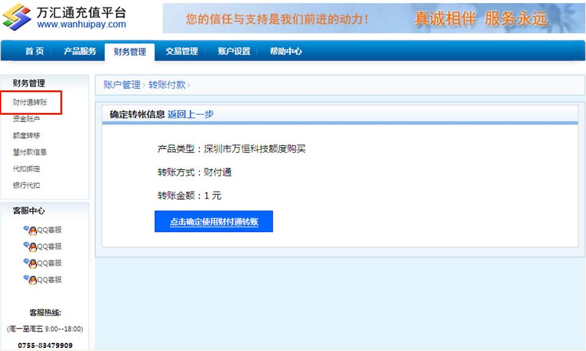
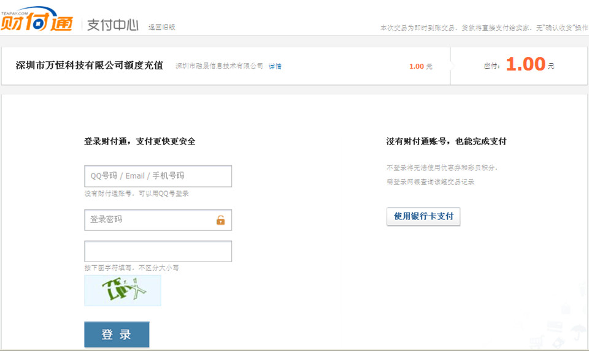
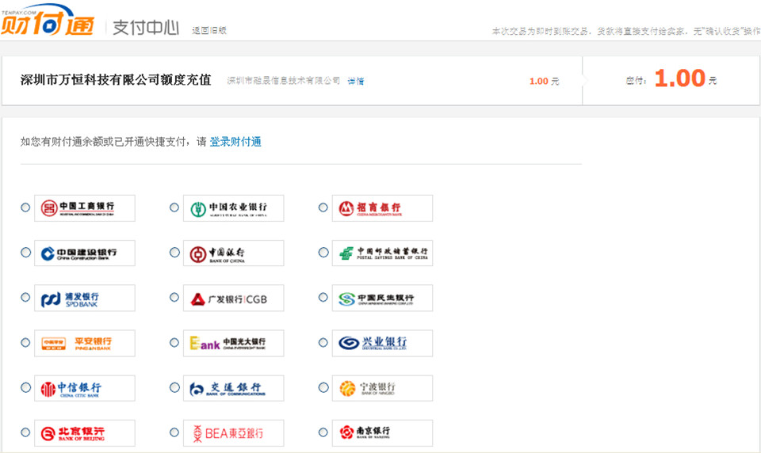
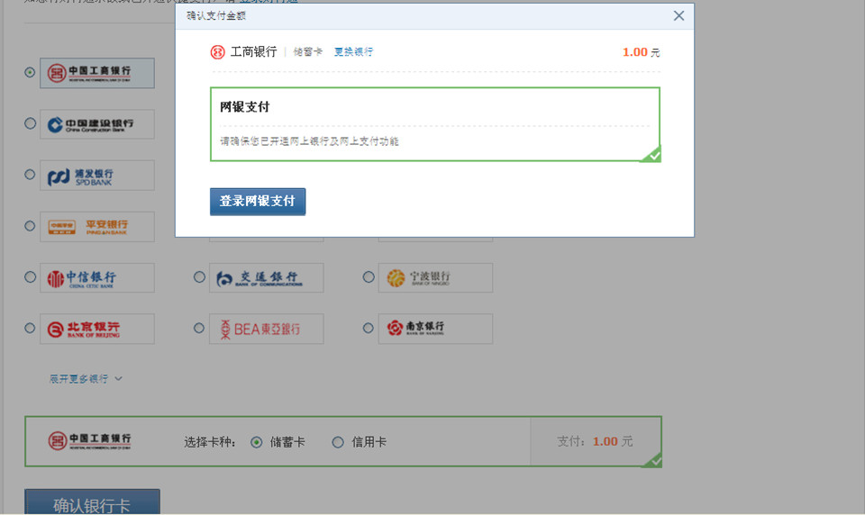

账户充值问题
1. 在“账户管理”选择【财付通转账】，平台为用户提供了【网上银行】或【财付通】双重方式供用户对平台账户进行充值加款。
1) *在【转款金额】中输入需要充值加款的金额，点击“确定”跳转到确定转账信息界面。
( 温馨提示：用户在使用财付通加款时，要确保电脑已安装杀毒软件并定期对电脑进行杀毒清理，以保证良好的支付环境。)


2) *核对转账金额，确定无误后点击确定使用财付通转账，跳转到财付通转账界面。
2. *财付通提供两种支付方式购买付款；
A：财付通账户：财付通账户中有余额或者拥有财付通账户的用户，可直接使用财付通账户进行付款。
*使用财付通账户支付可选择“余额支付”或财付通绑定银行卡的“快捷支付”，快捷支付可选择使用其他银行卡，确认无误在“财付通支付密码”中输入支付密码，点击“确认支付”按照正常操作完成支付。
用户使用“快捷支付”时，需保证所使用银行卡已开通“快捷支付”功能。
B：使用银行卡支付：无财付通账户用户可选择使用银行卡支付，即网银支付，用户选择使用银行卡支付时，必须确保银行卡开通网银功能。
1） *选择具有网银支付的银行点击“使用银行卡支付”跳转到确认网银支付界面。
2） *点击“登录网银支付”跳转到对应的网上银行登录界面，请根据您的签约银行提示进行操作，按照正常做操完成支付。